Mapa Interactivo
Desarrollo de un mapa interactivo personalizado para facilitar la exploración y navegación dentro de un videojuego.
Soy una desarrolladora experta en programación y diseño web, especializada en transformar ideas en soluciones digitales funcionales, modernas y visualmente atractivas. Combino conocimientos técnicos, creatividad y atención al detalle para desarrollar proyectos que integren rendimiento, usabilidad y una identidad visual profesional.


Desarrollo de un mapa interactivo personalizado para facilitar la exploración y navegación dentro de un videojuego.
Mi objetivo es ayudarte a convertir tus ideas en soluciones digitales que impulsen tu proyecto o negocio. Desde el desarrollo y la personalización de sitios web hasta el diseño de interfaces intuitivas. Busco crear experiencias digitales que respondan a tus necesidades y objetivos.
Creación, personalización y mejora de sitios web, cuidando su estructura, funcionalidad y presentación.
Creación de experiencias visuales atractivas, intuitivas y centradas en el usuario.
Desarrollo de funcionalidades adaptadas a los requisitos específicos de cada proyecto.
Atención al detalle para conseguir productos digitales coherentes, accesibles y fáciles de utilizar.
Comprensión de tus objetivos para convertir tus necesidades en soluciones prácticas y bien estructuradas.
Cada proyecto merece una solución pensada cuidadosamente. Me enfoco en comprender tus necesidades, mantener una comunicación clara y trabajar con responsabilidad para entregar resultados que combinen calidad técnica, diseño y funcionalidad.
Mi propósito es ayudarte a materializar tus ideas mediante soluciones digitales que aporten valor real a tu negocio y ofrezcan una experiencia positiva a tus usuarios.